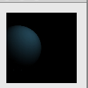

This test was taken from Processing.org which tests to make
sure the spotLights() works correctly on a sphere.

// Test from Processing.org size(100, 100, P3D); background(0); noStroke(); spotLight(51, 102, 126, 80, 20, 40, -1, 0, 0, PI/2, 2); translate(20, 50, 0); sphere(30);